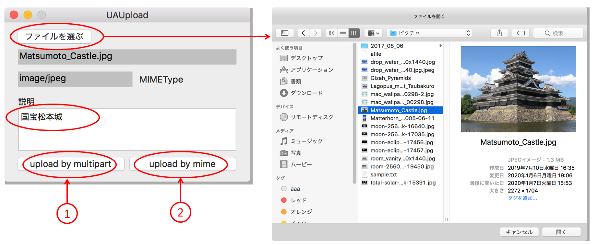

ローカルディスクのバイナリファイルをサーバにアップロードする
HTTPリクエストにより、ローカルディスクのバイナリファイルをサーバにアップロードする方法は二つある。
（１）multipart/form-data形式でファイルをアップロードする
（２）ファイルをBASE64形式の文字列に変換してアップロードする

multipart/form-data形式でファイルをアップロードする
ローカルディスクにある画像ファイル（jpg）を選択し、説明のテキストを入力する。multipart/form-data形式のリクエストメッセージを作成しサーバに送信する。サーバ側の処理（PHPスクリプト）は送られてきたデータを所定のディレクトリにファイルとして保存する。
リクエストメッセージを作成する
httpBody
境界文字列、改行コードの位置と数に注意。境界文字列は先頭に"--"を付加して設定すること。
MAX_FILE_SIZEには、送信するファイルの最大長（バイト数）を指定する。PHPが値を参照するキーワードである。
サーバ側の処理（PHPスクリプト）
PHPは受信したファイルデータをテンポラリファイルに保存する。PHPスプリクトはテンポラリファイルを任意の名前で特定のディレクトリに移動する。MIMEタイプはPOSTパラメータとして受け取るが使用していない。
レスポンスデータのダンプ（確認用）
ファイルをBASE64形式の文字列に変換してアップロードする
MIME拡張方式により、ファイルデータをBASE64形式の文字列にエンコードし、リクエストメッセージのPOSTデータの１つとして送信する。サーバ側の処理（PHPスクリプト）は、文字列をファイルデータにデコードし、任意のディレクトリに出力する。
リクエストメッセージを作成するメソッド
POSTデータはJSON形式のデータとして送信している。x-www-form-urlencoded形式でも可能である。
BASE64へのエンコードは、NSDataクラスのbase64EncodedStringWithOptionsメソッドで行う。
リクエストメッセージを作成して送信する
リクエストメッセージの送受信を行う共通処理 sendRequest
サーバ側の処理（PHPスクリプト）
JSON形式のデータは、php://inputストリームから読み込む。BASE64データのデコードは、base64_decode関数で行う。
MIMEタイプ、MAX_FILE_SIZEはPOSTパラメータとして受け取るが使用していない。
レスポンスデータのダンプ（確認用）
ソースコード
GitHub
Topics
ファイルのUTIからMIMEタイプを求める関数
ランダムな文字列を生成する関数
アップロードファイルのサイズの上限を引き上げる方法
PHPの設定ファイル（php.ini）のパラメータ値を変更する。例えば、10Mバイトのファイルをアップロードするときは、次のようにする。multipart/form-data方式の場合クライアントのMAX_FILE_SIZEの指定も必要である。